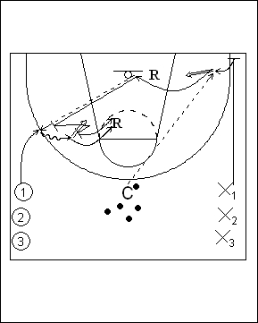

Catégorie : REBOND (Reb-01)
Déroulement
- Deux files, une d’attaquants et une de défenseurs. Les ballons se trouvent près du Coach au-delà de la ligne des trois points.
- X1 sprinte vers la baseline. Il stoppe en un temps et effectue un reverse pivot pour recevoir le ballon. Il shoote aussitôt et effectue le rebond offensif avec deuxième shoot si le premier a été raté. Il effectue rapidement la passe à l’attaquant 1 et va en défense sur lui (close out). L’attaquant peut faire au maximum deux dribbles dans le un contre un, puis il doit shooter. Les deux joueurs se livrent la bataille du rebond.
- Si le panier est marqué ou le rebond offensif gagné, les deux joueurs regagnent leur file d’origine après avoir déposé le ballon près du Coach. Si le défenseur gagne le rebond, il dépose le ballon près du Coach et les deux joueurs changent de file.
Coaching points
- Insister pour que ce drill soit effectué à un rythme très élevé avec des enchaînements rapides.
- Exiger une grande (saine!) agressivité lors de la dernière bataille du rebond.